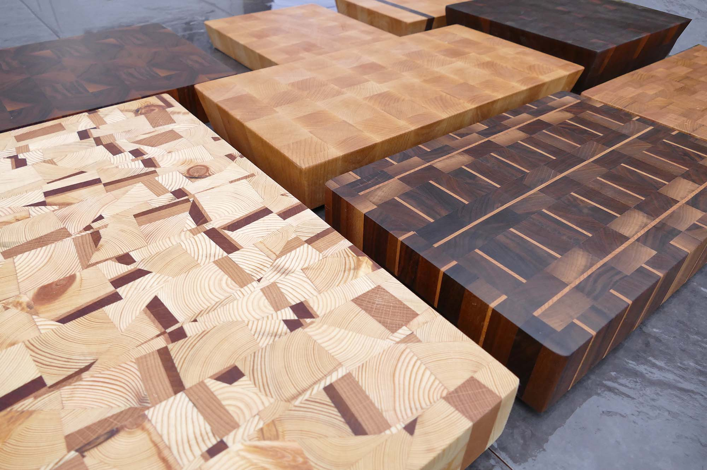
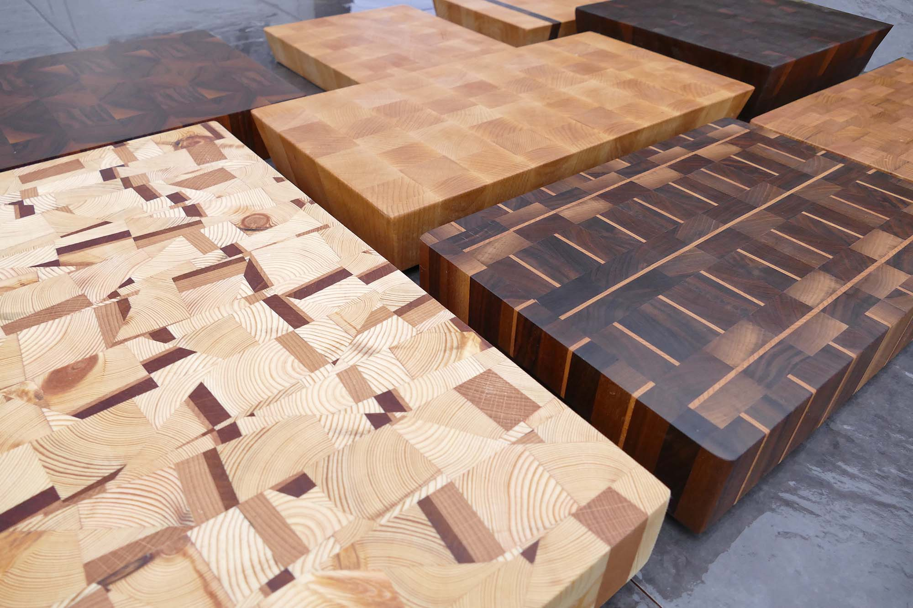

I am 23 years old and currently working as a part time graphic designer and carpenter based in Lindfield West Sussex; from where I am steadily building a selection of hand made bespoke wooden products to sell. I studied Digital Design at university. From a very early age I have a had a strong interest in carpentry; leading me to teach myself the skills and techniques needed to create my products. I have gradually built up and developed my own workshop culminating in my new online website.
Through my products I demonstrate my love of wood and my eye for design. Currently my main products are beautiful, hardwearing end grain chopping board. Eventually I will have a more diverse range of products to share with you as I progress with my business.
Feel free to contact me if you have a specific design or idea you would like, I will be happy to help. I also take on commissions.
<<<<<<< HEAD =======

>>>>>>> gh-pages
=======

>>>>>>> gh-pages
Turnaround time for making a Chopping Board can take up to a week depending on design. Products shown for sale are ready to ship out within 1-2 days. Products out of stock can take up to a month to be made, photographed and put up on the website for sale. If you would like a certain design in particular please get in contact.
My Chopping Board are made from a variety of different woods ranging from European Beech, Scandinavian pine, Cherry, American Black Walnut and many more. I choose woods based on their characteristics and quality to create superior products. Each Chopping Board receives four small rubber feet that prevent the board from moving when in use and increase stability on uneven surfaces, they are also less likely to scratch any surface they are put on.
Each board is sanded smooth and then treated with food grade mineral oil (sometimes called butcher block oil), this protects and extends the life of the Chopping Board; for extra protection and durability the board also receives a special blend of natural beeswax and oil, this protects the board from liquids.
The end grain of timber is much harder than it's face grain, usually by around 1.5x times. Although the end grain may be harder than it's face grain it has a lesser blunting effect on knife edges. This is due to the orientation of the wood fibres, the fibres open up around the blade and can close up with minimal damage to the wood making the cut almost invisible. In short the wood "self heals".